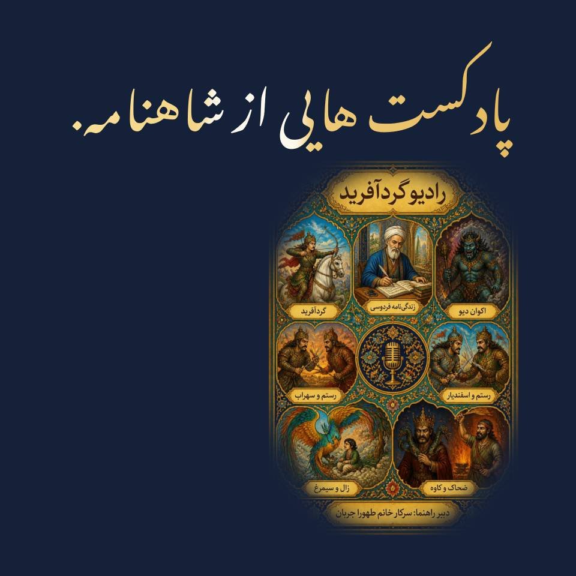

شاهنامه خوانی
«داستان های شاهنامه»؛ فصل اول رادیو گردآفرید
تابستان امسال، ما تلاشی جمعی را آغاز کردیم برای تمرین شنیدن و
شنیده شدن و درست نوشتن. تولید این پادکست برای ما فقط ضبط چند
فایل صوتی نبود. فرصتی بود برای آنکه اعضای کلاس گردآفرید، با
مراحل مختلف تولید یک اثر رسانهای آشنا شوند؛ از انتخاب موضوع و
تحقیق گرفته تا نوشتن متن، تنظیم روایت، تمرین خوانش، ضبط صدا،
توجه به موسیقی و طراحی فضای شنیداری. پادکست به ما یاد داد که
برای روایت کردن، باید پیش از هر چیز خوب گوش بدهیم؛ گوش دادن به
منابع، به روایتهای مختلف، به صدای شخصیتها و حتی به صدای
خودمان. ما در سه فصل رادیو گردآفرید عزیز را ساختیم. نام این فصل
«داستانهای شاهنامه» است؛ مجموعهای ۷ قسمتی دربارهی داستانها و
شخصیتهایی از شاهنامه که هرکدام بخشی از جهانِ حماسی و
اندیشمندانهی فردوسی را پیش چشم ما میآورند. ما در این پروژه
تلاش کردیم فقط روایتکنندهی چند داستان مشهور نباشیم. پرسش ما
عمیقتر بود: اگر شاهنامه را نه فقط به عنوان یک متن کهن، بلکه به
عنوان روایتی زنده از انسان، انتخاب، رنج، شجاعت و ایستادگی
بخوانیم، چه چیزهایی را دوباره کشف خواهیم کرد؟ در این فصل، ما به
سراغ داستانها و چهرههایی رفتیم که هرکدام دریچهای به دنیای
شاهنامه باز میکنند؛ از خودِ فردوسی و جهان فکری او گرفته تا
قصههایی که هنوز هم میتوانند برای ما معنا داشته باشند و ما را
به فکر وادارند. و این ابتدای مسیر #گردآفرید است...
با احترام؛ طهورا جربان